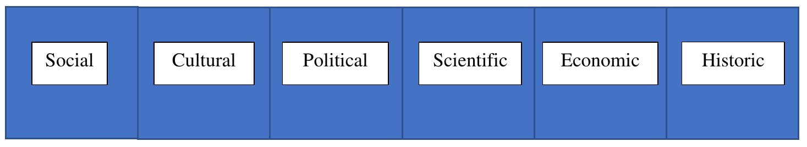

Write a visual analysis of any piece of media that means something to you, such as a movie, tv show, YouTube video, video game, artwork, or magazine (so long as the magazine features a visual component). Within this analysis, treat it informally while keeping in mind your audience; remain appropriate (remember we are still being graded by Sam). But don’t feel the need to sound like an aristocrat!
Choosing Your Media
When choosing your piece of media make sure that is has at least some emotional significance to you, otherwise you will be stuck BSing a 1000-word paper. Don’t choose something that you’ve never watched/looked at – this assignment will end up being much harder than it actually is; just do something that has meaning to you! Don’t feel like you must choose one of the options listed above, but keep your selection appropriate (if it’s not something you’d show in public it probably not something you should write for your English class!)
Specifics
When writing your piece be creative! Choose a piece of media that means something to you, take this meaning and then relate it to one of the themes below (see chart). For example: say you chose a movie that was meaningful to you because it provided mental support; you can take your personal experience and feelings towards that film and relate it to the social theme. You could also relate it to the cultural theme and talk about the cultural importance your piece of media has to you. Take these themes and make them yours. Don’t feel the need to do research and create a scholarly thesis. Just remember to keep it informal, don’t feel pressured to make this another research paper.

Requirements
Your writing must be at least 1250 words and be in MLA format. The only thing that would need to be cited is your piece of media, and any other sources you find helpful or necessary to your writing. Keep your writing informal, almost like if you were to write the closed captioning on a conversation. Obviously keep it appropriate but take this as an opportunity to really think about your audience, try and relate to them through your writing. Use literary techniques and devices such as jargon/colloquialisms, asides, metaphors/hyperboles, and figures of speech to address the audience (Usage of these and others will be the basis of grading).
Refining Your Skills
This specific assignment can help you learn how to speak to an audience and to persuade them of the importance of your media. It can also help you learn to write informally (which is rarely ever taught, because of its niche-ness). Informal writing can be used when writing personal pieces, or even when writing something like an application essay.
Informality as an Idea
Informality in writing can often be subjective and dynamic, this is why the definition for informality within this assignment is similar to a spoken conversation; meaning that it may contain (appropriate) slang words/figures of speech, metaphors, and asides; however you choose to do it, your writing should continuously keep a personal tone. This personal tone is going to be the basis of grading. You must use first person pronouns such as you and I. These words must be in your paper at least once, because you are talking about your feelings. There is an emphasis on you throughout this assignment. It should not feel like a scholarly paper.
Formatting
This analysis should still be split into paragraphs to break up the reading for the audience, but your introduction and conclusion do not need to be that of a research paper. Use the introduction to truly introduce your piece of media and talk about the personal connection you have with it, and then use your conclusion to possibly talk about the future impact and importance of the piece. Once again be creative – maybe use this opportunity to talk about the impression the media has left on you and if it has inspired you to do something with it.
Fine Print
The first draft of this assignment will be due on Eli Review on May 2. The final draft should be emailed to Sam on May 9. It should be 1250 words and should be sent as a .docx file.